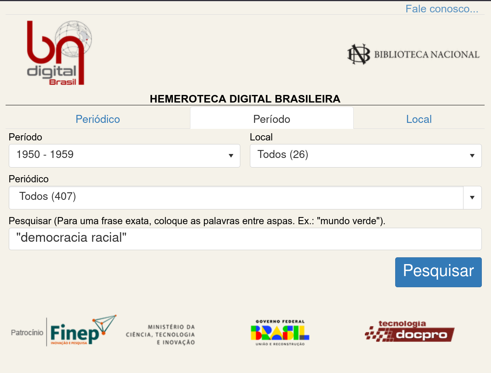
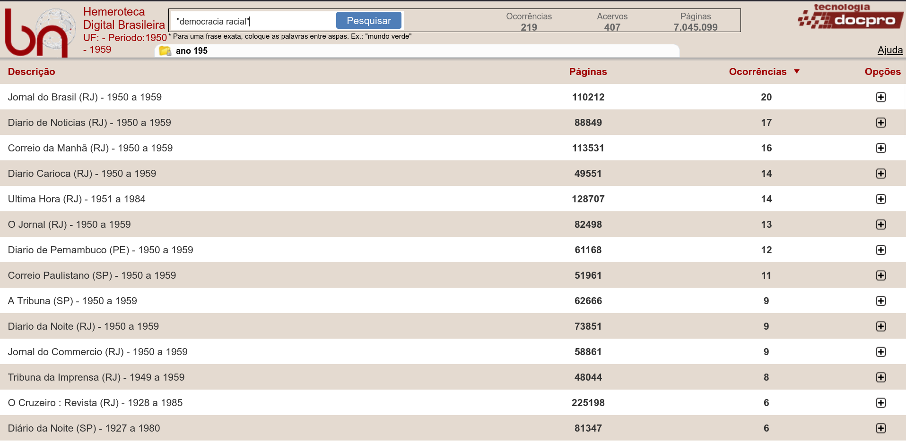
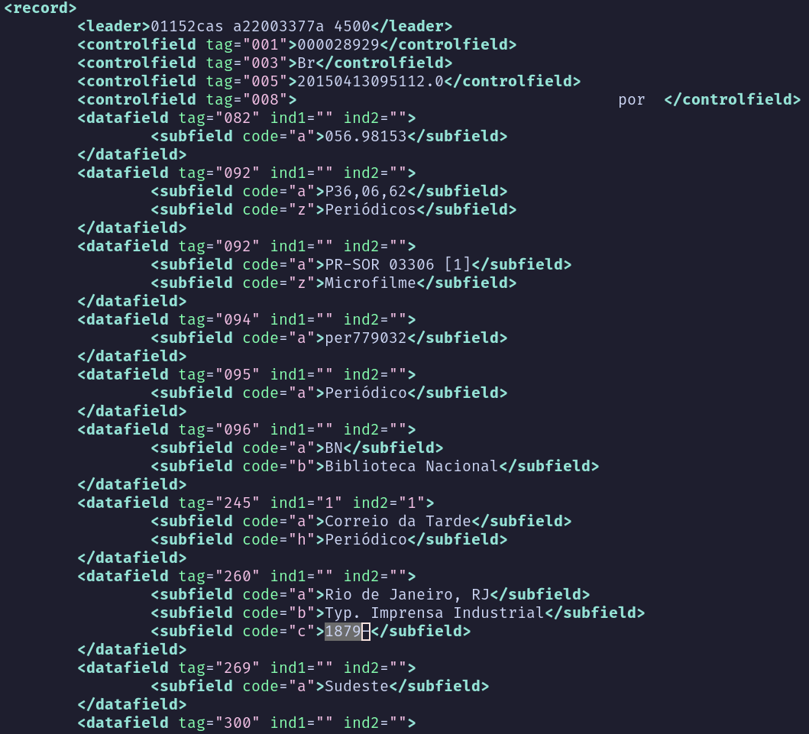
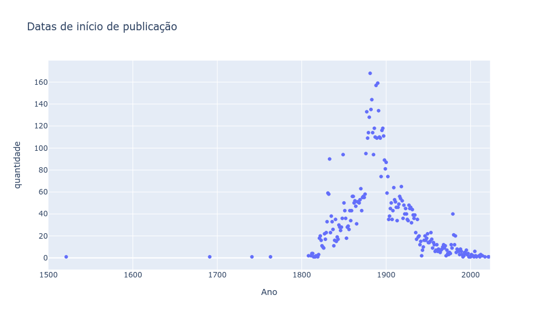
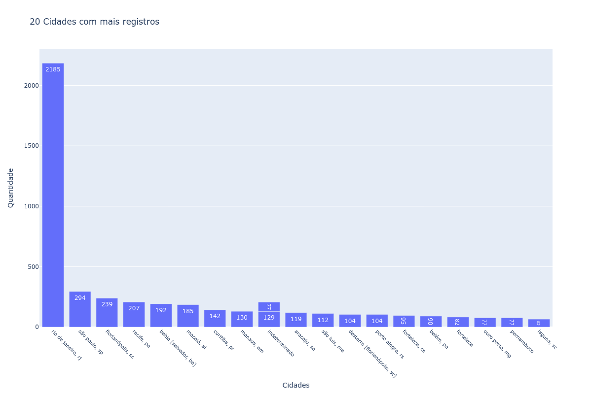

O que pesquiso quando busco na HDB?
Interfaces, acesso e método na pesquisa histórica digital
Eric Brasil
UNILAB · PPGIHD/UFRRJ · LABHDUFBA
2026-10-20
O ponto de partida
Em outubro de 2025, a Hemeroteca Digital Brasileira passou a exigir CAPTCHA para o acesso automatizado.
A aula começa com uma mudança aparentemente técnica. Ela altera as condições concretas de pesquisa. Não vou tratar o CAPTCHA apenas como um obstáculo operacional. A pergunta é o que ele revela sobre dependência, infraestrutura e método.
Um CAPTCHA pode ser uma decisão historiográfica
Acesso humano e acesso automatizado deixam de ser equivalentes.
Uma coleção pública continua visível, mas torna-se menos pesquisável em escala.
A interface passa a definir quem pode perguntar, como pode perguntar e com que volume.
O ponto não é dizer que toda restrição técnica produz automaticamente uma consequência historiográfica. O ponto é reconhecer que a infraestrutura organiza as possibilidades da pesquisa.
O comunicado oficial de 3 de outubro de 2025
“Atenção: comunicado importante para os usuários da Hemeroteca Digital Brasileira”
Fonte: Fundação Biblioteca Nacional, 03/10/2025.
Comunicado oficial
A data do comunicado não prova, sozinha, quando todos os efeitos técnicos começaram. Nesta apresentação, o foco é a decisão documentada e suas consequências metodológicas.
Breve apresentação
Eric Brasil
Professor Adjunto da UNILAB.
Professor permanente do PPGIHD/UFRRJ.
Pesquisador do LABHDUFBA.
Editor-chefe do Programming Historian em Português .
Pesquisas: História Digital · pós-abolição · imprensa · hemerotecas · IA e agentes.
Minha trajetória combina História Social, História Digital e pesquisa com fontes digitalizadas. O problema das hemerotecas não é externo ao meu trabalho. Ele atravessa projetos, ferramentas e decisões metodológicas que venho desenvolvendo com colaboradores e estudantes.
Como esta apresentação foi produzida
Produção integral com o Hermes Agent .
Uso de um modelo de linguagem e das skills de trabalho acadêmico e de apresentação.
Pesquisa, redação, edição, renderização e verificação executadas pelo agente.
Supervisão, orientação e responsabilidade intelectual: Eric Brasil .
Esta apresentação também é um objeto da discussão. Ela foi produzida por um agente de IA, combinando Hermes, o modelo de linguagem e as skills configuradas para pesquisa acadêmica e produção de apresentações. Eu supervisionei o processo, defini os objetivos, revisei as versões e continuo responsável pelas decisões intelectuais e pelo uso do material.
O que pesquiso quando pesquiso na HDB?
A pergunta que organiza a apresentação:
Pesquisamos jornais ou pesquisamos também a infraestrutura que os torna legíveis?
A partir deste ponto, incorporo a estrutura da apresentação anterior sobre a Hemeroteca Digital Brasileira. O objetivo não é repetir um roteiro antigo, mas usar aquele percurso como base para discutir o que mudou depois do CAPTCHA e diante da IA generativa.
Desconhecimento técnico é um problema metodológico.
Desconhecer a técnica também é desconhecer parte da fonte.
Rigor metodológico
“Os métodos de pesquisa digital criam demandas novas e às vezes mais rigorosas de precisão, pensamento metodológico, auto-organização e colaboração do que a pesquisa histórica tradicional.”
Fridlund; Oiva; Paju, 2020. Tradução minha.
Hermenêutica da prática
Uma teoria das práticas que permite refletir criticamente sobre os desafios teóricos e artesanais do trabalho digital e conceber soluções práticas para enfrentá-los.
Lucchesi, 2020. Tradução minha.
Ferramentas digitais condicionam nossas perguntas?
Cada ferramenta reúne decisões políticas que podem escapar ao pesquisador.
A black box metodológica dificulta avaliar, reproduzir e criticar resultados.
Ferramentas e métodos digitais produzem efeitos epistemológicos.
E a inteligência artificial nesse processo?
A IA generativa chegou. A crítica da fonte continua necessária.
O que pesquisamos quando pesquisamos na HDB?

A interface também é um argumento

A interface não é uma janela transparente para os dados. Ela organiza busca, ordenação, visualização, recorte e comparação.
Como compreender os dados da HDB?
É possível compreender o acervo através da interface?
As escolhas técnicas afetam a compreensão dos dados?
O que aparece nos resultados?
O que fica fora do índice?
Acessando os dados
API?
Web scraping ou coleta manual?Dados abertos?
Metadados estruturados?
OCR e imagens de página?
Pesquisa de pós-doutorado
Desenvolvimento de um framework para pesquisas com periódicos em língua portuguesa digitalizados.
Casos de estudo: HDB e Biblioteca Nacional Digital de Portugal.
Resultado: HEMDIG(pt) .
Uma visão geral dos dados: MARCXML
título do periódico;
subtítulo;
local de publicação;
editora;
período de publicação;
periodicidade;
idioma.
O catálogo também produz um recorte
Título
7.685
Subtítulo
3.666
Local
7.608
Período
7.265
Editora
5.675
Periodicidade
5.901
Idioma
6.614
Recorte do arquivo XML

Recorte do arquivo XML
Escopo cronológico e espacial
673 locais únicos.
7.685 títulos.
Publicações entre 1521 e 2022.
Viés cronológico?

Gráfico de dispersão com datas de início
Viés espacial?

Gráfico de barras com cidades mais frequentes
Quem acessa?
A abertura de uma interface não garante abertura da pesquisa.
Quem tem acesso à interface?
Quem tem acesso à API?
Quem pode fazer muitas requisições?
Quem pode hospedar modelos?
Quem pode auditar os resultados?
Quem fica dependente de plataformas privadas?
Interface, API e agente
Interface
explorar
visualizar
comparar
API
consultar
coletar
reprocessar
Agente
encadear
interpretar
registrar
Essas camadas não são equivalentes. Cada uma oferece capacidades diferentes e produz uma relação diferente com a fonte.
O agente não é um historiador
Pode executar operações.
Pode combinar fontes e ferramentas.
Pode produzir hipóteses.
Não substitui crítica de procedência, contexto e evidência.
Precisa deixar rastros para ser auditado.
E agora?
interdisciplinaridade;
colaboração;
transparência e ciência aberta;
dados e APIs abertas;
formação técnica;
documentação e versionamento;
financiamento e políticas públicas.
Tese de trabalho
A hemeroteca digital não é apenas um repositório de fontes. É uma infraestrutura que participa da produção do conhecimento histórico.
Com IA e agentes, essa infraestrutura passa a incluir também:
modelos;
APIs;
índices semânticos;
ferramentas;
registros de execução.
Contatos pessoais
LABHDUFBA — Laboratório de Humanidades Digitais da UFBA
Fontes e referências
Fundação Biblioteca Nacional. “Atenção: comunicado importante para os usuários da Hemeroteca Digital Brasileira”. 03 out. 2025.
Brasil, Eric. “Interfaces de hemerotecas digitais em português”. Matraga , v. 32, n. 65, 2025. DOI: 10.12957/matraga.2025.89783 .
Repositório de referência: slacsc .